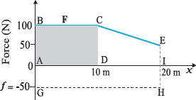
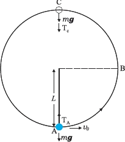
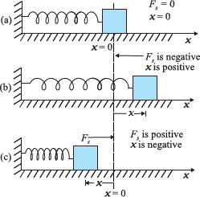
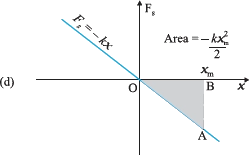
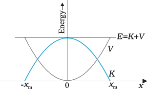

Ch 05 : Work Energy and Power
5.1 Introduction
Work: a specific quantity involving a force and the displacement it causes (later defined via scalar product). Energy: closely linked to the capacity to do work. Power: how fast work is done (everyday “powerful” often ≈ fast, but physics uses an exact definition).
5.1.1 The Scalar Product
Scalar product (dot product): vector × vector → scalar (this section). Vector product: vector × vector → vector (later, Chapter 6).
A, B = magnitudes of vectors A and B θ = angle between A and B A·B = scalar (magnitude only, no direction)
A·B = A(B cosθ) = B(A cosθ) B cosθ = component (projection) of B along A A cosθ = component (projection) of A along B So A·B = (size of one vector) × (component of the other along it).
Commutative: A·B = B·A Distributive: A·(B + C) = A·B + A·C Scalar multiplication: A·(λB) = λ(A·B), λ real
î, ĵ, k̂ = mutually perpendicular unit vectors along x, y, z
Ax, Ay, Az = components of A Bx, By, Bz = components of B
Since A·A = |A||A|cos0 = A2
Example 5.1: Angle between two vectors; projection using dot product
Angle θ between F and d Projection of F on d
Don’t mix up projection (a scalar component) with a projection vector. Here it’s the scalar component along the other vector. In A·B = AxBx + AyBy + AzBz, watch signs carefully (e.g. the −5 in F).
5.2 Notions of Work and Kinetic Energy: The Work-Energy Theorem
u = initial speed v = final speed a = constant acceleration (1D) s = distance travelled
m = mass F = (net) force along the line of motion (this 1D case)
a = acceleration vector d = displacement vector F = ma = net force vector a·d, F·d are dot products → only the component along displacement counts
(1/2)mv2 is called kinetic energy, K F·d is called work, W (work done by the force over displacement d)
Ki = initial kinetic energy Kf = final kinetic energy W = work done on the body (here: by the net force)
Example 5.2: Raindrop—work done by gravity and a resistive force (using WE theorem)
m = 1.00 g = 10−3 kg h = 1.00 km = 103 m impact speed v = 50.0 m s−1 initial speed u = 0 (starts from rest) g = 10 m s−2 (constant)
Wg = work done by gravity m = mass, g = gravitational acceleration, h = vertical drop
Wr = work done by resistive force
Multiple forces ⇒ always use net work: ΔK = ΣW Negative work ⇒ force has a component opposite displacement (typical: drag/friction) Watch units: 1 g = 10−3 kg, 1 km = 103 m
5.3 Work
Example 5.3: Work in skidding stop; Third-law forces vs work
Force opposite displacement ⇒ θ = 180° = π rad -
Work by road on cycle: Work (constant force): W = F d cos θ (also: W = F·d) W = work (J) F = force magnitude (N) d = displacement magnitude (m) θ = angle between force and displacement
By Newton’s Third Law, cycle pushes on road with 200 N, opposite to road’s force on cycle But the road doesn’t move (no displacement) So work done by cycle on road: W = 0
Work done by a constant force: meaning, sign, and when work is zero
Conditions for zero work
- (i) Displacement is zero (d = 0): e.g. weightlifter holds a 150 kg mass steady for 30 s → no work on the load in that time.
- (ii) Force is zero (F = 0): e.g. block on a smooth horizontal table: no horizontal force (no friction), can still move a long distance → horizontal work is zero.
- (iii) Force ⟂ displacement (θ = 90° = π/2): cos(π/2) = 0 ⇒ W = 0.
- e.g. block moves horizontally on smooth table: gravity mg is vertical, displacement is horizontal → gravity does no work.
- e.g. perfectly circular moon orbit: Earth’s gravity is radial, moon’s instantaneous displacement is tangential → θ = 90° → gravity does no work on the moon.
Positive and negative work (sign of work)
- If 0° ≤ θ < 90°, then cos θ > 0 ⇒ W is positive.
- If 90° < θ ≤ 180°, then cos θ < 0 ⇒ W is negative.
- Common case: friction opposite motion has θ = 180° ⇒ cos 180° = −1 ⇒ negative work.
Dimensions and units of work and energy
- SI unit: joule (J), named after James Prescott Joule (1811–1869).
- There are alternative units of work/energy (see Table 5.1).
5.4 Kinetic Energy
- K is scalar.
- Illustrations: KE of fast streams used to grind corn; sailing ships use KE of wind.
- Typical K values for objects are listed (Table 5.2).
Example 5.4: Bullet emerging with 10% of initial kinetic energy
5.5 Work done by a variable force
Approximation by small intervals and summation (Riemann sum)
- For a small displacement Δx, treat the force as roughly constant at F(x).
- Small work done:
Small work element (1D): ΔW = F(x)Δx ΔW = work over small displacement (J) F(x) = force at position x (N) Δx = small displacement (m) - Total work from xi to xf ≈ sum of rectangle areas under the F–x graph:
Approx. work (sum): W ≅ Σ F(x)Δx (Eq. 5.6), summed from xi to xf W = total work (J) F(x) = force at position x (N) Δx = width of each small interval (m) xi, xf = initial and final positions
Exact expression using integration: area under the F–x curve
Example 5.5: Work from a changing push and constant friction (area method)

- Applied force = 100 N for first 10 m.
- Then applied force decreases linearly to 50 N by the time total displacement is 20 m.
- Friction is constant magnitude |f| = 50 N, opposing motion.
- Applied force F: 100 N flat line from x = 0 → 10 m; then straight line down to 50 N at x = 20 m (note: at x = 20 m, F = 50 N, not zero).
- Friction force f: constant at −50 N (negative since opposite to motion / chosen + direction).
- 0 to 10 m: rectangle = 100 × 10 = 1000 J.
- 10 to 20 m: linear drop 100 N → 50 N, so area is a trapezium:
- Trapezium area = (1/2)(sum of parallel sides) × (distance)
- = (1/2)(100 + 50) × 10 = 750 J
- Constant −50 N over 20 m: Wf = (−50) × 20 = −1000 J.
5.6 Work–Energy Theorem for a variable force (1D proof)
Derivation using Newton’s Second Law
dK/dt = d/dt (1/2 m v2) = m v (dv/dt) Newton’s 2nd law (1D): F = m (dv/dt) So: dK/dt = vF And since v = dx/dt: dK/dt = F (dx/dt) Multiply by dt: dK = F dx
Integral form and final theorem
Work–Energy Theorem vs Newton’s Second Law (Scalar vs Vector)
Example 5.6: Work done by a Position-Dependent Retarding Force
Given
Mass: m = 1 kg Initial speed: vi = 2 m s−1 Rough patch: x = 0.10 m to x = 2.01 m -
Retarding force (opposes motion) in the patch: Fr(x) = − k/x for 0.10 < x < 2.01 m Fr(x) = 0 for x < 0.10 m and x > 2.01 m
Constant: k = 0.5 J
To find
Final kinetic energy Kf as it crosses the patch Final speed vf
Method (Work–Energy Theorem with variable force)
The Concept of Potential Energy
Examples of “stored energy”: stretched bow-string; fault lines in Earth’s crust (like compressed springs) storing energy released in earthquakes.
Gravitational Potential Energy near Earth’s Surface
Gravitational force on mass m: mg downward. Choose upward as positive. Take g ≈ constant near Earth if h ≪ RE (ignore change of g with height).
External work done against gravity = mgh. This work is stored as gravitational potential energy:
V(h) = gravitational potential energy at height h m = mass g = acceleration due to gravity (≈ constant near Earth) h = height above reference (ground)
Force as Negative Derivative of Potential Energy
F = gravitational force component along chosen axis (vertical here) V(h) = potential energy as a function of height h = vertical coordinate (upward +)
Conversion of Potential Energy to Kinetic Energy (Falling Body)
v = speed just before ground g = acceleration due to gravity h = drop height
When Potential Energy is Applicable (Conservative Forces)
Mathematical Definition of Potential Energy in One Dimension
F(x) = force as a function of position x V(x) = potential energy function x = position coordinate
Conservative vs Non-Conservative Forces (Path Dependence)
Non-conservative: work/KE depends on other factors (e.g. velocity, specific path).
Mass m released from rest at height h on a smooth (frictionless) incline reaches bottom with speed √(2gh), independent of the incline angle. So KE at bottom = mgh (depends only on height drop).
Dimensions and Unit of Potential Energy
SI unit: joule (J) (same as work + kinetic energy).
Change in Potential Energy and Work Done by a Conservative Force
ΔV = V(xf) − V(xi) = change in potential energy Minus sign: if force does +work, potential energy drops by that amount
F(x) = conservative force at position x Δx = small displacement ΔV = corresponding change in potential energy
Conservation of Mechanical Energy
Derivation (1D motion under a conservative force)
Work–energy theorem: ΔK = F(x) Δx Conservative force (via potential): −ΔV = F(x) Δx
K = kinetic energy V(x) = potential energy at position x xi, xf = initial, final positions
Definitions of a Conservative Force (All are equivalent here)
Definition 1 (via potential): F(x) is conservative if it comes from a scalar potential V(x) using Eq. (5.9) / F(x) = −dV/dx. (3D generalisation uses a vector derivative; beyond this book.) -
Definition 2 (endpoint dependence): work depends only on endpoints. Using energy: W = Kf − Ki = V(xi) − V(xf) Depends only on xi and xf. Definition 3 (closed path): work over any closed path is zero. From Eq. (5.11), if xi = xf, then Ki = Kf ⇒ net work = 0.
Statement of the Principle
Illustration Mentioned
Gravity example: ball of mass m dropped from cliff height H shows PE → KE while total mechanical energy stays constant (if no non-conservative work). Spring force is taken up in the next section (as noted).
Conservation of Mechanical Energy (Ball at Heights 0, h, H)
Mechanical energies at the three heights
Near Earth’s surface, gravity is ~constant and conservative ⇒ mechanical energy is conserved in free fall (ignore air resistance).
Applying conservation: results for speeds
- At H: energy is all potential.
- At h: energy is part potential + part kinetic.
- At ground: energy is all kinetic (ideal model).
Example 5.7: Bob on a String Completing a Vertical Semicircle with Slack at the Top

Forces and energy reasoning
- External forces on bob: weight (mg) + tension T in string.
- Tension does no work: motion is tangential, tension is radial (⊥ to displacement).
- So only gravity does work ⇒ mechanical energy conserved.
- Take gravitational PE = 0 at the bottom point A.
(i) Finding the required initial speed v0
- Rise from A to C = 2L ⇒ PE at C = mg(2L).
- Speed at C = vC.
- Slack at C ⇒ TC = 0.
- (1/2)mvC2 = (1/2)m(gL) = (1/2)mgL
- So E = 2mgL + (1/2)mgL = (5/2)mgL
(ii) Speeds at points B and C
- PE at B (relative to A) = mgL
- Total energy at B: E = mgL + (1/2)mvB2
- (1/2)mv02 = mgL + (1/2)mvB2
- (1/2)m(5gL) = mgL + (1/2)mvB2
- (5/2)mgL − mgL = (1/2)mvB2 ⇒ (3/2)mgL = (1/2)mvB2
- vB2 = 3gL ⇒ vB = √(3gL)
(iii) Ratio of kinetic energies at B and C
- KB = (1/2)mvB2 = (1/2)m(3gL)
- KC = (1/2)mvC2 = (1/2)m(gL)
Nature of motion after reaching C
- At C, string slack; bob’s velocity is horizontal (to the left).
- If string is cut at C: bob does projectile motion with horizontal projection (like kicked off a cliff).
- If string is not cut: bob can keep following the circle and complete the revolution.
5.9 The Potential Energy of a Spring


Hooke’s law (force law for an ideal spring)
- Large k → spring is stiff.
- Small k → spring is soft.
- Sign idea: force is always restoring → points back toward equilibrium (opposite to x).
Work done by the spring force (extension from 0 to xm)
Compression case and sign consistency
- Compression: displacement xc is negative (xc < 0).
- Spring still does negative work if the block is pushed further into compression.
- Magnitude stays (1/2)k xc2 since xc2 > 0.
Work done from an initial displacement xi to final displacement xf
Work in a cycle (returning to the same displacement)
- Position-dependent: Fs = −kx.
- Work depends only on start/end positions (Eq. 5.17).
- Work over a closed path is zero (Eq. 5.18).
Spring potential energy function
Energy conservation for a released block and maximum speed
Example 5.8: Car Colliding with a Mounted Spring (Maximum Compression)
Given data and speed conversion
- Mass of car: m = 1000 kg
- Speed: 18.0 km h−1 = 5 m s−1
- Spring constant: k = 5.25 × 103 N m−1
Energy method to relate compression to initial kinetic energy
- K = (1/2)(1000)(52) = 1.25 × 104 J
- (1/2)kxm2 = (1/2)mv2 (use this to solve for xm)
Remarks on Conservative Forces and Potential Energy
Key remarks (exam-focused)
-
(i) Energy method gives NO time: Energy can give max compression / max height etc., but not the time taken. For time, solve using Newton’s 2nd law. -
(ii) Not every force is conservative: Friction is non-conservative. If non-conservative forces act, mechanical energy isn’t conserved → modify the energy equation (see Ex 5.9 + modified formula later). -
(iii) Zero of PE is your choice: Reference level for potential energy is arbitrary → choose what’s convenient. Spring: usually set V(x)=0 at x=0 (unstretched spring). Constant gravity near Earth: often set V=0 at Earth’s surface. Universal gravitation: often take V=0 at infinity.
Work–Energy Theorem with Friction (Non-Conservative Force): Example 5.9
Problem statement

Physical reasoning (forces and choice of method)
While compressing: both spring force and friction oppose the motion (oppose compression). Friction is non-conservative ⇒ use work–energy theorem, not plain “mechanical energy conserved”.
Applying the theorem
-
Change in kinetic energy: At max compression, object stops momentarily ⇒ vf = 0.
Work done during compression distance x:
Net work: Wnet = Wspring + Wfriction = −(1/2)k x2 − µ m g x Set Wnet = ΔK, then rearrange:
Numerical substitution noted in the text
Friction term computed: µ m g = 0.5 × 103 × 10 = 5 × 103 N (taking g = 10.0 m s−2). Solve the quadratic; choose the positive root since xm is a positive compression.
Modified Mechanical Energy Relation with Non-Conservative Forces
Derivation from WE theorem
Let total force = conservative part Fc + non-conservative part Fnc. Work–energy: (Fc + Fnc) · Δx = ΔK. For conservative forces: Fc · Δx = −ΔV.
Power
Average power
Instantaneous power
Since dW = F · dr, then:
Units of power
SI: watt (W), with 1 W = 1 J s−1. Also used: horsepower (hp).
Electrical energy consumption and kWh
Example shown: 100 W bulb for 10 hours.
100 W × 10 h = 1000 Wh = 1 kWh Also: 1 kWh = 103 W × 3600 s = 3.6 × 106 J
Power with Resistive Forces: Example 5.10 (Elevator)
Problem statement
Reasoning
Constant speed ⇒ a = 0 ⇒ net force = 0. So motor force must balance total downward resistive force: weight + friction.
Compute: F = (1800 × 10) + 4000 = 22000 N Minimum motor power (just balances resistive forces): P = Fv
P = 22000 × 2 = 44000 W In horsepower: 44000 / 746 ≈ 59 hp
Collisions
Set-up of an idealised two-body collision
Two masses: m1 and m2. m1 initially moves with speed v1i (i = initial). Often take m2 initially at rest; no loss of generality (just a convenient frame/starting condition). After collision, both masses “fly off” in different directions; there are relationships linking masses, velocities, and angles.
Elastic and Inelastic Collisions
Impulse argument for momentum conservation
Kinetic energy during collisions: elastic vs inelastic
If the “spring” fully returns to its original shape with no energy loss, then initial KE = final KE (but KE during the collision time Δt is not constant). If the deformation isn’t relieved and they move together afterwards, they share a common final velocity.
Collisions in One Dimension
Completely inelastic collision in 1D (head-on)
Elastic collision in 1D (head-on)
Special cases (exam favourites)
- Case I: m1 = m2
- v1f = 0
- v2f = v1i
Interpretation: mass 1 stops; its speed is passed to mass 2. - Case II: m2 >> m1
- v1f ≈ −v1i
- v2f ≈ 0
Interpretation: heavy mass barely moves; light mass rebounds (velocity reverses).
Example 5.11: Slowing down of neutrons (moderator concept)
Energy transfer in a 1D elastic collision with a stationary nucleus
Numerical illustrations (given results)
- Deuterium nucleus: m2 = 2m1
- f1 = 1/9
- f2 = 8/9
Interpretation: ~90% of neutron energy can transfer in one elastic hit. - Carbon nucleus: (mass a few times neutron mass)
- f1 = 71.6%
- f2 = 28.4%
One-dimensional vs Two-dimensional Collisions
Collisions in Two Dimensions
Vector momentum conservation and choice of plane
Component equations (m2 initially at rest)
Elastic collision condition in 2D
Example 5.12: Elastic collision of equal-mass billiard balls (cue and target)
Momentum relation for equal masses
Glancing Elastic Collision of Equal Masses (One Initially at Rest)
Collisions of Smooth Spheres (Contact Collisions) vs Scattering (Action at a Distance)
- initial velocities,
- type of interaction,
- masses,
- shapes and sizes.
summary-work energy and power
Work–Energy Theorem
Conservative Force: Definition and Tests
- Path independent: work depends only on the end points {xi, xf}, not the route taken.
- Zero closed-loop work: work over any closed path is 0 (back to start).
Potential Energy Function for a Conservative Force (1D)
Conservation of Mechanical Energy
Gravitational Potential Energy Near Earth’s Surface
Elastic Potential Energy of a Spring
Scalar (Dot) Product of Two Vectors
- A·B can be +, −, or 0 depending on θ.
- Meaning: A·B = (magnitude of one) × (component of the other along the first).
- Commutative: A·B = B·A
- Distributive: A·(B + C) = A·B + A·C
Points to Ponder (High-Yield Exam Notes)
1) Work Done Must Specify the Force and Displacement
- which force (one force or a set of forces),
- on which body,
- over what displacement.
2) Work is a Scalar; Can be Positive or Negative
- Work is a scalar → can be + or −.
- Mass and kinetic energy are positive scalars.
- Work by friction/viscous force on a moving body is negative (opposes motion).
3) Newton’s Third Law: Forces Cancel but Works Need Not
4) WE Theorem Can Be Used Without Knowing Detailed Force Law
5) WE Theorem and Newton’s Second Law are Not Independent
- WE theorem is basically a scalar form of Newton’s 2nd law.
- Mechanical energy conservation is a result of WE theorem when only conservative forces do work.
6) Frames of Reference: Inertial and Non-Inertial
- WE theorem works in all inertial frames.
- In non-inertial frames, include pseudo forces in the net force for the work calculation.
7) Potential Energy Zero Level is Arbitrary (Up to a Constant)
- For gravitational PE mgh, V = 0 often at the ground.
- For spring PE (1/2)kx2, V = 0 at the equilibrium position.
8) Not Every Force Has a Potential Energy
9) Momentum Conservation vs Kinetic Energy During Collision
- In a collision, total linear momentum is conserved at each instant.
- Kinetic energy conservation (even if collision is elastic) applies after the collision ends; it does not generally hold at every instant during contact.
- Physical reason: bodies deform; they can be momentarily at rest relative to each other while in contact.